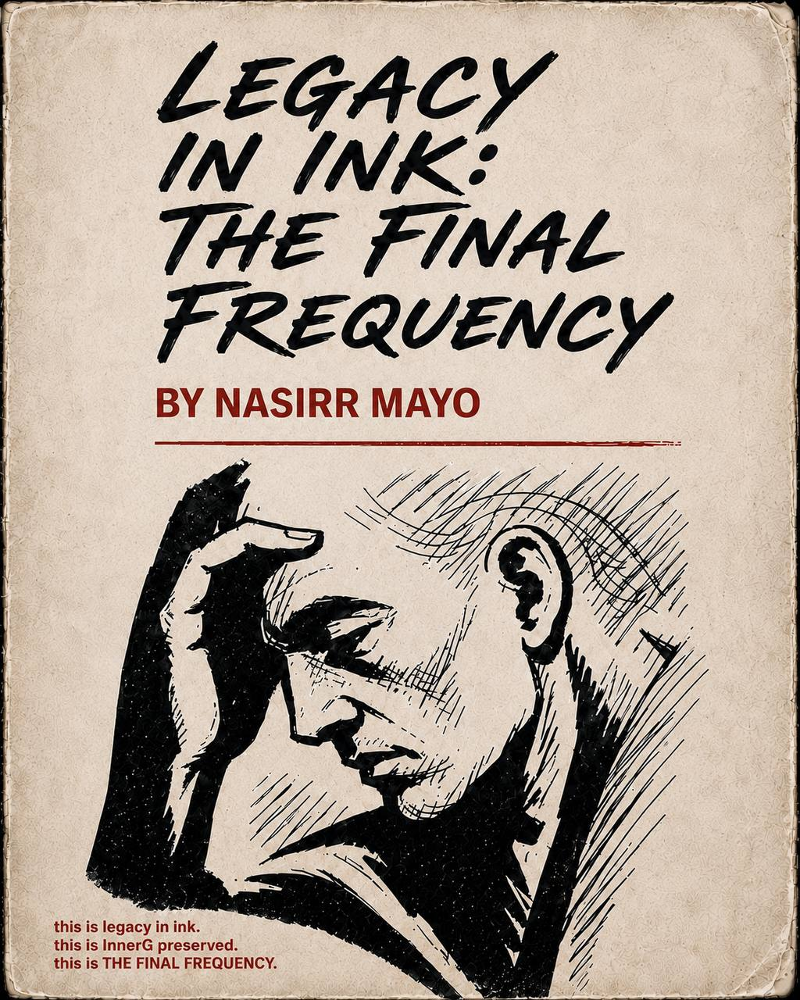

AI and agents
Understand the new tools.
Learn what AI can do, where it fails, and how to use it as a collaborator without surrendering your judgment.
Enter the AI classroomThe learning home of InnerG Intel
InnerG Intel helps people turn information into usable intelligence across AI, technology, personal growth, creative ownership, and books. Learn what is changing, understand what it means, and build forward with a community.
The InnerG ecosystem
Each room develops a different form of intelligence. Together they help people understand change, make stronger decisions, and create work that lasts.
AI and agents
Learn what AI can do, where it fails, and how to use it as a collaborator without surrendering your judgment.
Enter the AI classroomTechnology
Make emerging technology understandable, useful, and connected to the problems people face in real life.
Personal intelligence
Practice discernment, discipline, pattern recognition, and the standards that protect your direction.
Creative ownership
Move from consuming information to building systems, media, businesses, and intellectual property.
InnerGReads
Books and publications give lived intelligence a permanent form that can travel beyond the original conversation.
Enter the libraryDaily discussion hubs
Come to get oriented in the morning. Return in the evening to stay with the questions.
Daily / Morning
Morning Transmissions
A daily AI briefing for people who want signal over noise. We connect what is changing to education, creative work, business, and real life.
Daily / Evening
Rabbit Holes
An evening room for AI, history, philosophy, psychology, technology, and future-thinking. We follow the thread together without forcing a final answer.
Your study path
0 of 4 complete
Classrooms
Practical classes for people who want understanding before hype.
CLASS 001
Understand today’s AI landscape, what the tools actually do, and how to use them without confusing output for intelligence.
CLASS 002
Move beyond chatbot use and design a focused AI assistant around one real problem, repeatable process, and clear boundary.
CLASS 003
Move from experience to pattern, from pattern to principle, and from principle to a stronger decision or owned piece of work.
Field notes
An agent is not magic. It is a model given a goal, context, tools, and a loop for deciding what to do next.
Enter the AI discussionThe fastest answer is not automatically the wisest decision.
Field noteYou cannot shape a system you only know how to consume.
Field noteA new tool cannot repair a workflow nobody understands.
Field notePersonal intelligence determines how technology, relationships, and opportunity are used.
Enter the reading roomThe page gives experience a structure other people can enter.
Visit the libraryNo field notes match that search yet.

Release 001InnerGReads / Current reading room
Books are one room inside InnerG Intel. The current reading room uses Verse 014 to explore discernment, standards, and the human judgment required beneath every tool and relationship.
What did you agree to before you understood what it would require?
Where has keeping someone happy replaced telling the truth?
What would partnership look like without performance?
The community
A room for learners, builders, readers, creators, and people doing the work in real life.
What do you want the InnerG ecosystem to help you build?
The door is being prepared
Follow InnerG Intelligence for the first class and community announcement.